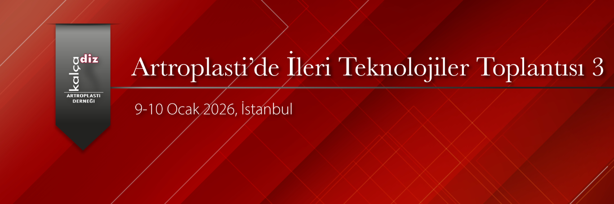

Değerli Meslektaşlarımız,
Kalça ve Diz Artroplasti Derneği olarak 9-10 Ocak 2026 tarihlerinde İstanbul'da ‘’Artroplasti’de İleri Teknolojiler Toplantısı-3" düzenlenecektir.
Kurs Kayıt Ücreti 30.000TL'dir.
Artroplasti ile ilgilenen ve kendini bu alanda geliştirmek isteyen tüm meslektaşlarımızı kursumuza davet etmekten büyük mutluluk duyarız.
Prof. Dr. İbrahim Tuncay
KADAD Başkanı
Prof. Dr. Ömer Faruk Bilgen
Kurs Başkanı

